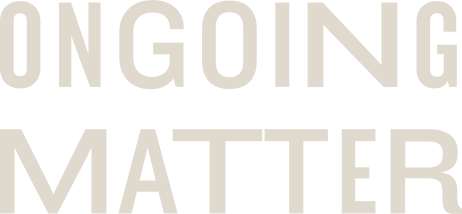
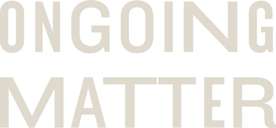
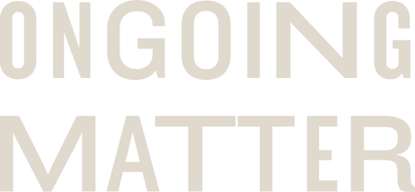
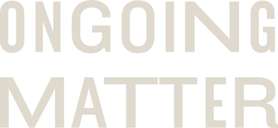

12.03.19–12.14.19
Democracy, Design,
and the Mueller Report


 

Ongoing Matter is a multi-platform, traveling collection of new poster designs that mobilizes political engagement. This exhibition seeks to encourage engagement with the Report On The Investigation Into Russian Interference In The 2016 Presidential Election, or, as it is more colloquially known, the Mueller Report. These contemporary poster designs seek to make the Report accessible, and thus make the possibility of genuine, thoughtful, and passionate engagement with its findings possible. The show illuminates the major threats to democracy cited in the Mueller Report. The collection will travel to several venues, including the Krasl Art Center in St. Joseph, Michigan, as well as Cleveland State
University Galleries in Cleveland, Ohio. This exhibition functions as a living showcase of current political artefacts that seeks to empower citizens at a crucial moment in the democratic experience (pre-2020 presidential elections). As graphic designers, the artists in this exhibition consider their charge one of emancipation: using the art of communication to reveal, persuade, and propel action. It should be noted that this project is non-partisan; even if the audience that experience this work has varied ideologies, the ultimate goal is to energize citizens to participate in their own democracy. Ongoing Matter is concerned with preserving democracy, protecting integrity, and sharing knowledge.